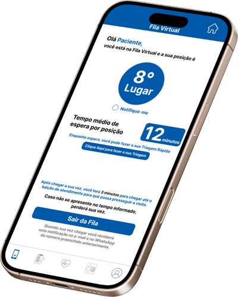
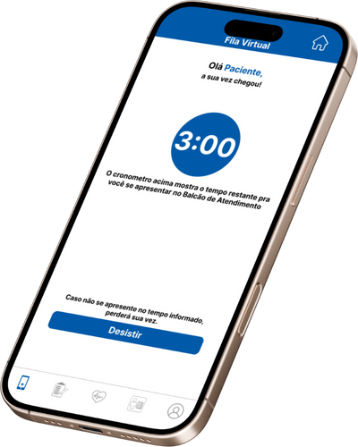
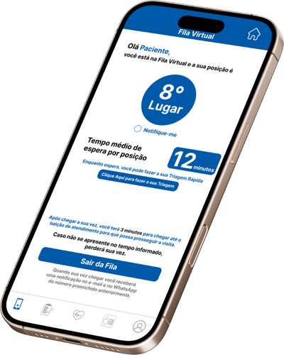
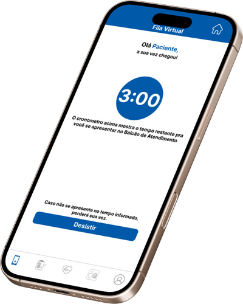

FILA VIRTUAL
A triagem automática é uma funcionalidade em que o totem realiza perguntas objetivas ao acompanhante da criança, coletando informações essenciais sobre os sintomas e o estado de saúde.
- Check-in no Totem ou App
O paciente faz o check-in com CPF, QR Code ou cartão no totem ou aplicativo.
- Cadastro/Confirmação de Dados
Caso necessário, o sistema solicita atualização ou confirmação de dados (telefone, convênio, etc.).
- Entrada na Fila Virtual
Após o check-in, o sistema registra o paciente em uma fila digital, organizando por ordem de chegada, prioridade ou tipo de atendimento.
- Atualizações em Tempo Real
O paciente pode acompanhar seu lugar na fila em uma tela na recepção, no app ou receber chamadas por SMS ou som local.
- Chamada Automática
Quando chegar a vez do paciente, o sistema o chama automaticamente para o guichê, sala ou setor correspondente.


 


